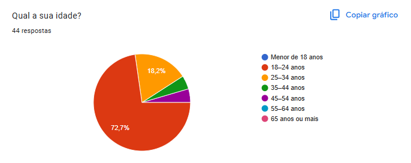
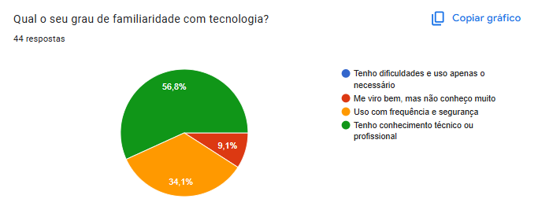
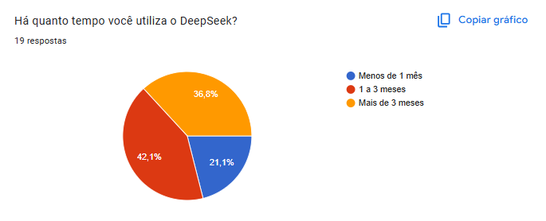
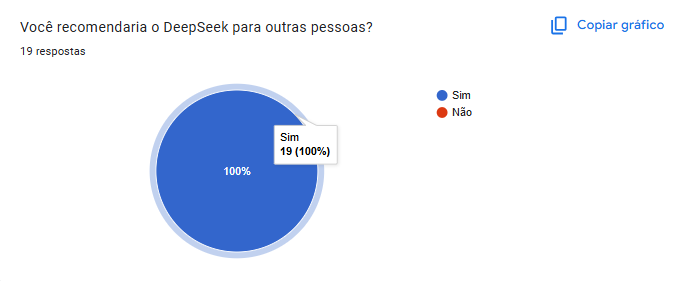
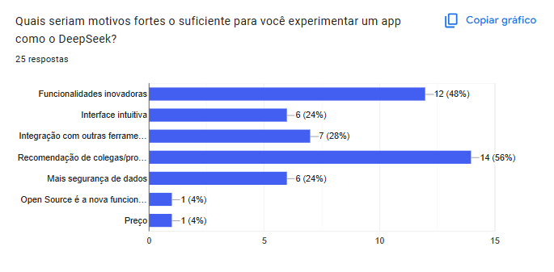

Pesquisa/Questionário
A técnica de pesquisa por questionário consiste em “um conjunto de perguntas estruturadas” cujo objetivo é coletar informações da experiência dos usuários de forma rápida e de baixo custo. Em vez de realizar entrevistas individuais,o que “seria proibitivo” em termos de custo-benefício, o questionário pode ser aplicado em papel ou, mais comumente, por meio de formulários on-line, permitindo atingir um grande volume de participantes em pouco tempo (Vazquez e Simões, p. 177).
Estrutura do Questionário
A seguir, apresenta-se o questionário estruturado em oito blocos:
- Perfil do Usuário (Q1–Q8)
- Funcionamento do App (Q9–Q13)
- Experiência e Interação (Q14–Q19)
- Usabilidade e Interface (Q20–Q23)
- Experiência e Satisfação (Q24-Q27)
- Barreiras/Abandono do DeepSeek (Q28–Q33)
O questionário apresenta dois fluxos distintos: um dedicado a quem já utiliza o app, explorando percepções de uso e satisfação, e outro direcionado a não-usuários, focando em motivações de experimentação e barreiras de adoção. Veja a estrutura completa na (figura 3).

Público-Alvo
O público-alvo desta pesquisa foi composto pessoas recrutadas essencialmente em dois canais (44 respostas):
-
Grupos de WhatsApp • Comunidades de estudantes e profissionais de tecnologia (TI, desenvolvimento de software, pesquisa acadêmica em IA). • Ligas e núcleos informais de estudo.
-
Equipes de trabalho específicas • Times de empresas e laboratórios que já utilizam alguma solução de IA no dia a dia. • Projetos interdisciplinares em que o DeepSeek poderia entrar como ferramenta de apoio.
A intenção foi alcançar tanto usuários experientes do DeepSeek quanto não-usuários, na tentiva de garantir diversidade em faixa etária, nível de escolaridade e grau de familiaridade com tecnologia.
- Usuários (quem já testou o app) ofereceram feedback direto sobre estabilidade, funcionalidades mais usadas e expectativas não atendidas.
- Não-usuários (quem nunca experimentou ou abandonou o DeepSeek) ajudaram a revelar barreiras de adoção — desde inseguranças em privacidade até preferência por soluções concorrentes.
Esse desenho amostral permitiu tanto mapear pontos de melhoria (usabilidade, performance, etc.) quanto entender os gatilhos de engajamento e as motivações para não usar ou abandonar o aplicativo.
Justificativas e Objetivos do Questionário DeepSeek
Aqui é apresentado de forma clara e estruturada, as justificativas que embasam cada uma das 33 perguntas do questionário aplicado a usuários e não-usuários do DeepSeek. O objetivo é tornar explícito o propósito de cada item, facilitando a compreensão de como as informações coletadas irão nortear decisões de produt e priorização de funcionalidades.
Todas as questões foram elaboradas com base em critérios específicos de perfil, usabilidade e desempenho, e algumas delas utilizam escala Likert para mensurar níveis de concordância ou satisfação.
Com este mapeamento, a equipe de desenvolvimento pode alinhar esforços para atender às expectativas dos participantes, aprimorar a experiência de uso e mitigar barreiras de adoção, garantindo que cada requisito futuro seja fundamentado em dados concretos obtidos durante a pesquisa.
QUESTÕES/JUSTIFICATIVA
| ID | Pergunta | Justificativa |
|---|---|---|
| 1 | Qual a sua idade? | Auxiliar a traçar características do perfil do usuário |
| 2 | Qual o seu gênero? | Auxiliar a traçar características do perfil do usuário |
| 3 | Qual o seu nível de escolaridade? | Auxiliar a traçar características do perfil do usuário |
| 4 | Em que área você atua atualmente? (Se não estiver trabalhando ou estudando no momento, sinta-se à vontade para indicar sua última área de atuação, área de interesse ou deixar observações.) | Auxiliar a traçar características do perfil do usuário |
| 6 | Qual o seu grau de familiaridade com tecnologia? | Auxiliar a traçar características do perfil do usuário |
| 7 | Com que frequência você utiliza aplicativos de busca de informações? | Auxiliar a traçar características do perfil do usuário |
| 8 | Você já usou o aplicativo DeepSeek? | Auxiliar a traçar características do perfil do usuário |
| 9 | Ao usar o DeepSeek, quais destes aspectos você considera essenciais para uma boa experiência? Selecione até três (3) opções que achar mais relevantes. | Identificar e priorizar, junto aos usuários, quais elementos da experiência do DeepSeek são mais valorizados no uso real do aplicativo. |
| 10 | Você sente que seus dados estão protegidos ao usar o app? | Avaliar a percepção de segurança e privacidade dos usuários, para orientar requisitos de transparência e controle de dados. |
| 11 | Por favor, explique o que mais contribui para a sua percepção de segurança (ou insegurança) no app. | Coletar insights detalhados sobre fatores que influenciam a confiança dos usuários, de modo a definir requisitos de comunicação e consentimento de uso de dados. |
| 12 | Com que frequência você enfrenta falhas técnicas ao usar o aplicativo? | Mensurar a incidência de erros e instabilidade, para priorizar requisitos de performance, escalabilidade e continuidade de serviço. |
| 13 | Se você indicou que já enfrentou falhas técnicas (por exemplo, escolher 'Às vezes', 'Frequentemente' ou 'Sempre'), por favor, conte-nos mais: descreva o que aconteceu e como essa situação afetou o uso do aplicativo. | Obter relatos sobre tipos de falhas e seus impactos na experiência, a fim de especificar requisitos de tratamento de erros, mensagens de feedback e mecanismos de retry. |
| 14 | Há quanto tempo você utiliza o DeepSeek? | Identificar segmentos de usuários por tempo de uso, para correlacionar experiência com satisfação e adequar níveis de suporte e personalização. |
| 15 | Quais são as principais tarefas que você costuma realizar em aplicativos de busca ou inteligência artificial? | Mapear os fluxos de uso e as atividades mais frequentes, para orientar prioridades de funcionalidade e otimizar jornadas de usuário. |
| 16 | O DeepSeek atende às suas expectativas? | Mensurar o nível geral de correspondência entre soluções oferecidas e necessidades dos usuários, identificando lacunas a serem preenchidas. |
| 17 | Caso sua resposta seja "Parcialmente" ou "Não", por favor, descreva os motivos abaixo: | Coletar os principais pontos de descontentamento, para traduzir em requisitos de melhoria e alinhamento com expectativas. |
| 18 | Quais funcionalidades você mais utiliza? (Selecione até três) | Identificar as features de maior valor prático, para priorizar manutenção, refinamento e alocação de recursos de desenvolvimento. |
| 19 | Quais funcionalidades você gostaria de ver no DeepSeek no futuro? (Selecione até três) | Descobrir demandas de novas features, para compor o roadmap de produto e antecipar investimento em inovação. |
| 20 | Como você avalia a facilidade de uso do app? | Avaliar a usabilidade global, definindo requisitos de interface, fluxos e design para garantir simplicidade e eficiência. |
| 21 | A interface visual do app é clara e agradável? | Verificar a aceitação do layout e estilo visual, para orientar ajustes em design system e identidade visual. |
| 22 | Você sente dificuldade para encontrar o que precisa no aplicativo, como opções, ferramentas ou informações? | Mensurar problemas de navegação e descoberta, a fim de definir requisitos de menu, pesquisa interna e arquitetura de informação. |
| 23 | Caso tenha alguma experiência (positiva ou negativa) com relação a interface ou uso do aplicativo e queira detalhar melhor, deixe seu relato aqui. | Capturar feedback qualitativo sobre pontos de frustração ou encantamento, para alimentar requisitos de UX detalhados e correções pontuais. |
| 24 | Você recomendaria o DeepSeek para outras pessoas? | Identificar a necessidade de melhorias focadas em retenção e defesa da marca. |
| 25 | Caso sua resposta seja "Não" na questão anterior, por favor, descreva os motivos abaixo: | Coletar as objeções que impedem a recomendação, transformando-as em requisitos de correção de pontos críticos que afetam a adoção. |
| 26 | Você já enfrentou dificuldades ao usar o app? Quais? | Identificar barreiras e erros recorrentes no uso real, para especificar requisitos de robustez, help contextualizado e suporte. |
| 27 | Avalie sua satisfação geral com o DeepSeek | Quantificar o grau de satisfação global, para estabelecer metas de melhoria contínua e métricas de sucesso do produto (KPIs). |
| 28 | Quais seriam motivos fortes o suficiente para você experimentar um app como o DeepSeek? | Entender fatores motivacionais chave, para orientar comunicação de valor e priorização de funcionalidades que impulsionem experimentação. |
| 29 | Se você conhece o app, por que nunca o utilizou ou deixou de utilizar? | Mapear barreiras de adoção e pontos de desistência, para definir requisitos de onboarding, marketing e usabilidade que reduzam a fricção inicial. |
| 30 | O que mais te desmotivou ou desagrada no app DeepSeek (ou em apps parecidos)? | Capturar insatisfações comparativas, para evitar repetir erros de concorrentes e priorizar requisitos de diferenciação e qualidade. |
| 31 | O que faria você começar a usar (ou voltar a usar) um app como o DeepSeek? | Identificar gatilhos de reengajamento, a fim de definir requisitos de melhorias, promoções ou campanhas de reativação. |
| 32 | Você sente falta de alguma funcionalidade em apps de busca ou inteligência artificial? Qual? | Descobrir lacunas em soluções atuais, para gerar requisitos de inovações que atendam a demandas não supridas no mercado. |
| 33 | Você já teve alguma experiência negativa com apps desse tipo? Se sim, qual? | Mapear experiências ruins com competidores, para evitar alucinações, inconsistências e problemas de confiabilidade na solução. |
RESULTADOS
Q1

Q2
Q3

Q4

Q5

Q6
Q7

Q8

Q9

Q10

Q11

Q12

Q13

Q14
Q15

Q16

Q17

Q18

Q19

Q20

Q21

Q22

Q23

Q24
Q25

Q26

Q27

Q28
Q29

Q30

Q31

Q32

Q33

Requisitos Elicitados
A seguir, apresenta-se a consolidação dos requisitos elicitados junto aos usuários por meio do questionário DeepSeek. Cada linha da tabela reúne o identificador único do requisito (ID), a técnica utilizada para sua coleta, sua classificação como funcional ou não funcional, a descrição detalhada da necessidade, o status de implementação e a referência ao(s) item(ns) do formulário original que motivaram sua inclusão. Essa visão estruturada permite acompanhar de forma clara e organizada o progresso de cada requisito e orientar as próximas fases de priorização, design e desenvolvimento.
TABELA DE REQUISITOS ELICITADOS
| ID | Técnica | Categoria | Descrição | Status | Observação |
|---|---|---|---|---|---|
| RQF01 | QUESTIONÁRIO | Funcional | Deve suportar busca incremental (exibição de sugestões em tempo real conforme o usuário digita). | Não implementado | Q19 |
| RQF02 | QUESTIONÁRIO | Funcional | Todos os dados sensíveis do usuário devem ser criptografados em trânsito (TLS) e em repouso (AES-256). | Implementado | Q9, Q28, Q29, Q31 |
| RQF03 | QUESTIONÁRIO | Funcional | O usuário deve poder controlar quais dados são compartilhados (chat, histórico de buscas, localização). | Não implementado | Q9, Q28, Q29, Q31 |
| RQF04 | QUESTIONÁRIO | Funcional | Deve haver autenticação multifator opcional para acesso a funcionalidades avançadas. | Não implementado | Q9, Q28, Q29, Q31 |
| RQF05 | QUESTIONÁRIO | Funcional | A interface deve seguir diretrizes de usabilidade (botões visíveis, texto legível, feedback imediato). | Implementado | Q9, Q28, Q30 |
| RQF06 | QUESTIONÁRIO | Funcional | Deve oferecer modo escuro e modo claro, com configuração manual e sincronização automática com o SO. | Implementado | Q9, Q28, Q30 |
| RQF07 | QUESTIONÁRIO | Funcional | Deve incluir tutorial interativo na primeira execução, explicando as principais funcionalidades. | Não implementado | Q9, Q29, Q32 |
| RQN01 | QUESTIONÁRIO | Não funcional | Disponibilizar, no próprio app, informações claras e acessíveis sobre como e onde os dados são armazenados. | Não implementado | Q11 |
| RQN02 | QUESTIONÁRIO | Não funcional | Especificar e permitir ao usuário optar por participar ou não do uso de seus dados em re-treinamento/venda. | Não implementado | Q11 |
| RQN03 | QUESTIONÁRIO | Não funcional | Aumentar a disponibilidade do sistema para ≥ 99,9 % de uptime. | Não implementado | Q12, Q13, Q16, Q17, Q26, Q29, Q30 |
| RQN04 | QUESTIONÁRIO | Não funcional | Diminuir o tempo médio de resposta para ≤ 2 s (simples) e ≤ 10 s (complexas). | Não implementado | Q9, Q12, Q13, Q30, Q31 |
| RQF08 | QUESTIONÁRIO | Funcional | Exibir status do servidor em tempo real (Online, Manutenção, Sobrecarga). | Não implementado | Q13 |
| RQF09 | QUESTIONÁRIO | Funcional | Implementar botão “Tentar novamente” ou retry automático em caso de erro de servidor. | Implementado | Q13 |
| RQF10 | QUESTIONÁRIO | Funcional | Melhorar retenção de contexto em diálogos longos para evitar “esquecimento” ou mistura de informações. | Parcialmente implem. | Q13 |
| RQN05 | QUESTIONÁRIO | Não funcional | Garantir estabilidade na geração de conteúdos pesados (PDF, médicos, cálculos), evitando falhas. | Parcialmente implem. | Q13 |
| RQF11 | QUESTIONÁRIO | Funcional | Implementar memória de contexto persistente entre conversas. | Não implementado | Q19 |
| RQF12 | QUESTIONÁRIO | Funcional | Permitir escolha de modelos (diferentes versões/models de IA). | Não implementado | Q19 |
| RQF13 | QUESTIONÁRIO | Funcional | Permitir organização de conversas em pastas ou listas por tema ou projeto. | Não implementado | Q19 |
| RQF14 | QUESTIONÁRIO | Funcional | Integrar agendamento e lembretes com calendários externos (Google, Outlook). | Não implementado | Q19 |
| RQF15 | QUESTIONÁRIO | Funcional | Adicionar editor de texto avançado com suporte a Markdown e formatação de código. | Não implementado | Q19 |
| RQF16 | QUESTIONÁRIO | Funcional | Implementar comandos de voz para entrada e saída de informações. | Não implementado | Q19 |
| RQN06 | QUESTIONÁRIO | Não funcional | Atingir ≥ 95 % de usuários avaliando a usabilidade como “Fácil” ou “Muito fácil.” | Parcialmente implem. | Q20 |
| RQN07 | QUESTIONÁRIO | Não funcional | Alcançar ≥ 90 % de concordância em “Interface clara e agradável.” | Não implementado | Q21 |
| RQN08 | QUESTIONÁRIO | Não funcional | Reduzir para ≤ 5 % os usuários que relatam dificuldade em encontrar opções/ferramentas. | Não implementado | Q22 |
| RQF17 | QUESTIONÁRIO | Funcional | Ajustar visualização do título ao passar o mouse sobre o nome do chat na barra lateral de histórico. | Não implementado | Q23 |
| RQF18 | QUESTIONÁRIO | Funcional | Retry automático ou fila de prompts quando o sistema estiver sobrecarregado, sem recarregar a página. | Não implementado | Q26 |
| RQN09 | QUESTIONÁRIO | Não funcional | Garantir tempo de resposta de OCR < 35 s por imagem e confiabilidade na extração. | Não implementado | Q26 |
| RQF19 | QUESTIONÁRIO | Funcional | Expandir cobertura de OCR para múltiplos formatos e extração confiável. | Não implementado | Q26 |
| RQF20 | QUESTIONÁRIO | Funcional | Instruções claras e contextualizadas sobre OCR (siglas e limitações). | Não implementado | Q26 |
| RQF21 | QUESTIONÁRIO | Funcional | Conectar nativamente a ferramentas populares (Google Drive, Outlook, GitHub etc.). | Não implementado | Q28 |
| RQF22 | QUESTIONÁRIO | Funcional | Exibir citações de fontes e referências em respostas baseadas em documentos. | Não implementado | Q32 |
| RQF23 | QUESTIONÁRIO | Funcional | Disponibilizar resumo automático de vídeos (links do YouTube). | Não implementado | Q32 |
Bibliografia
VAZQUEZ, Carlos Eduardo; SIMÕES, Guilherme Siqueira. Engenharia de requisitos: software orientado ao negócio. Rio de Janeiro: Brasport Livros e Multimídia, 2016. p. 177-178.
LIKERT, Rensis. A Technique for the Measurement of Attitudes. Archives of Psychology, n. 140, p. 1–55, 1932.
WIEGERS, Karl E.; BEATTY, Joy. Software Requirements. 3. ed. Redmond: Microsoft Press, 2013.
POHL, Klaus; RUPP, Chris. Requirements Engineering Fundamentals: A Study Guide for the CPRE® Foundation Level – IREB compliant. Heidelberg: dpunkt.verlag, 2015.
| Data | Versão | Descrição | Autor | Revisor |
|---|---|---|---|---|
| 02/05/2025 | 0.1 | (#Q04) Documentação referente a aplicação da técnica de Pesquisa/Questionário. | @Gabriela | @Mateus |